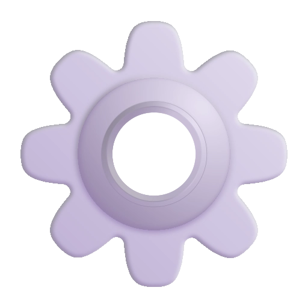

Discord bot, který ti připomene svátky
Automatické odesílání, jednoduchá konfigurace a moderní design pro tvůj server.
Uživatelské příkazy
/bot
Informace o botovi (invite, support, verze...).

/config
Nastavení bota na serveru.
/donate
Napíše informace o podpoření běhu eSvatek bota.
/help
Zobrazí seznam příkazů, které bot má.
/ping
Napíše aktuální ping bota.
/svatek
Zjistí svátek k dnešnímu dni, nebo k zadanému datu.
Moderátorské příkazy
/channel
Nastaví kanál pro odesílání svátků.
/modrole
Nastaví roli moderátora bota.
/sendSvatek
Pošle svátek do nastaveného kanálu.